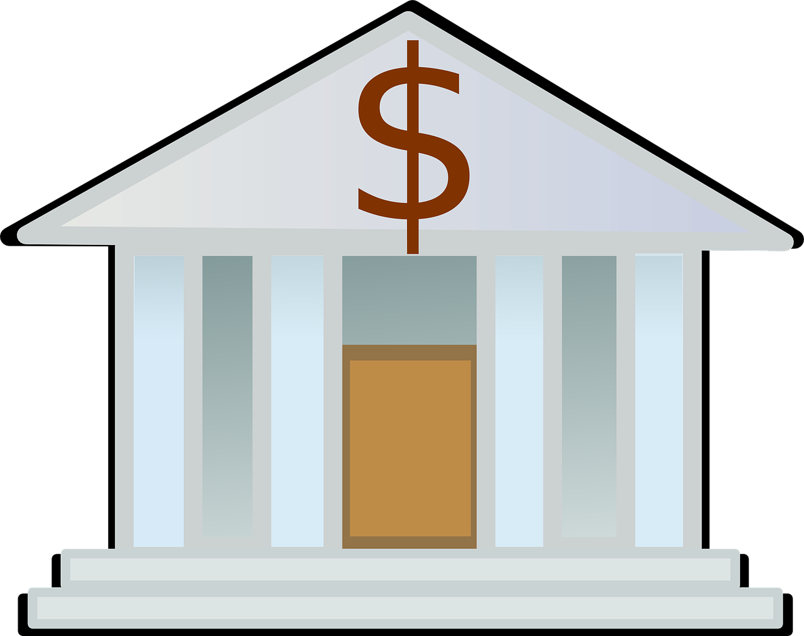

1980년대 저축대부조합 위기는 미국의 금융 시스템에서 발생한 대규모 파산과 위기를 나타냅니다. 이 위기의 주요 원인 중 하나는 저축대부조합(Savings and Loan Associations, S&Ls)이라고 불리는 금융 기관들의 재무 건전성과 관련이 있었습니다.
1. 이자율의 상승: 1970년대 후반과 1980년대 초반에는 미국의 이자율이 상승하였습니다. 이로 인해 저축대부조합들이 보유한 장기 담보 대출의 가치가 하락하면서 자산 가치가 감소했습니다.
2. 부실 대출과 투기적 활동: 많은 저축대부조합이 주택 대출에 중점을 두고 있었는데, 부동산 시장에서의 변동성과 함께 고금리 환경에서 대출을 통한 수익 창출을 시도하면서 투기적인 운용이 늘어났습니다. 부실한 대출이 늘어나고, 특히 상업용 부동산 대출에서는 위험이 크게 증가했습니다.
3. 규제의 완화와 감독 부재: 1980년대 초기에는 금융 규제가 완화되었고, 이는 저축대부조합이 자본 시장에서 자유롭게 자금을 조달할 수 있게 되었습니다. 그러나 이에 따라 감독이 부족하게 되었고, 저축대부조합들이 위험한 투자에 더욱 빠져들게 되었습니다.
1980년대 중반에는 저축대부조합 중 상당수가 파산하거나 실질적으로 파산 상태에 처해졌습니다. 이로 인해 연방 정부는 1989년에 저축대부조합 위기에 대한 대규모 인수 및 구조조정 계획을 시작했습니다. 이로써 연방 정부가 직접 많은 저축대부조합을 인수하거나 청산하는 등의 조치를 취했습니다. 이러한 위기는 수백억 달러에 달하는 비용을 초래했으며, 미국 금융 시스템 전반에 영향을 미쳤습니다. 이후, 금융 규제가 강화되고 금융 시스템의 건전성을 강조하는 정책이 시행되었습니다.
